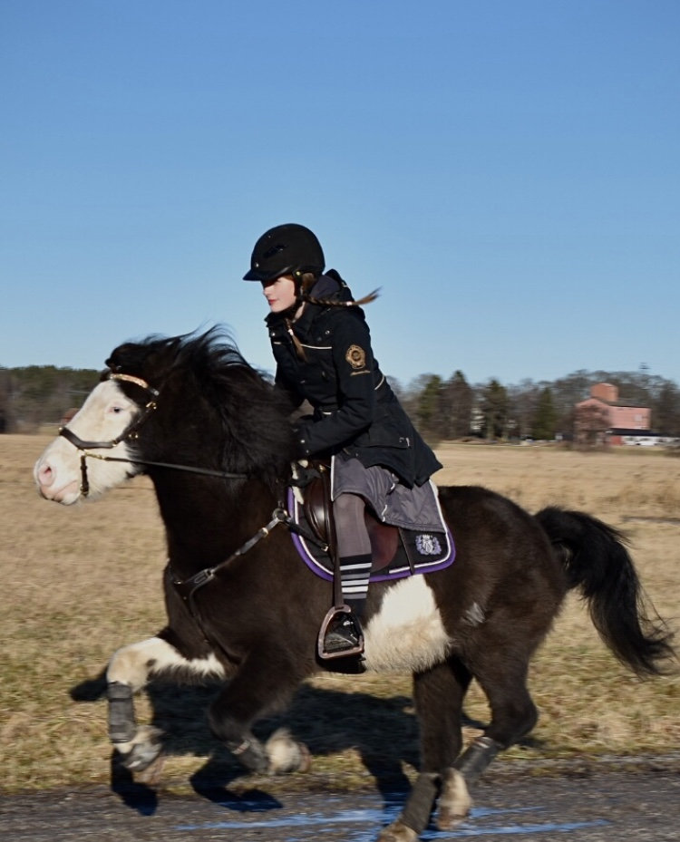
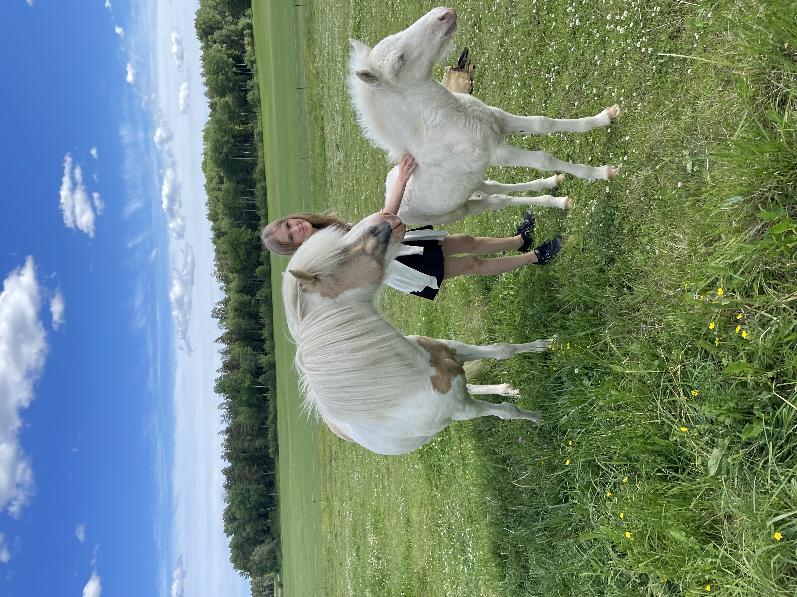
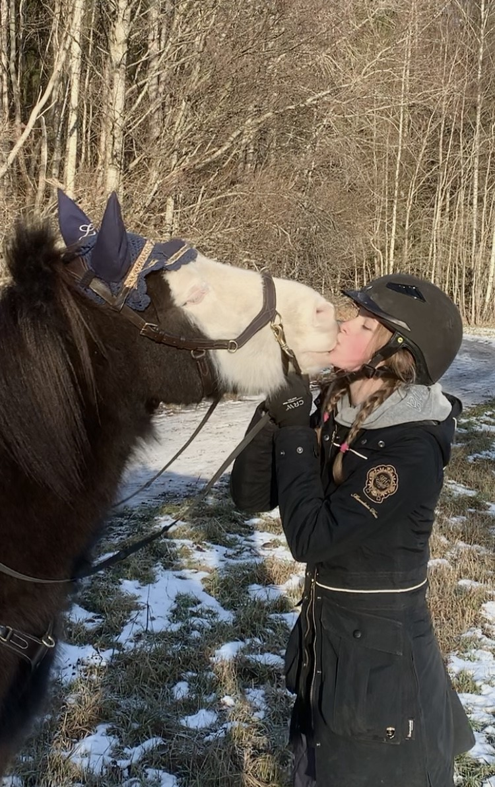
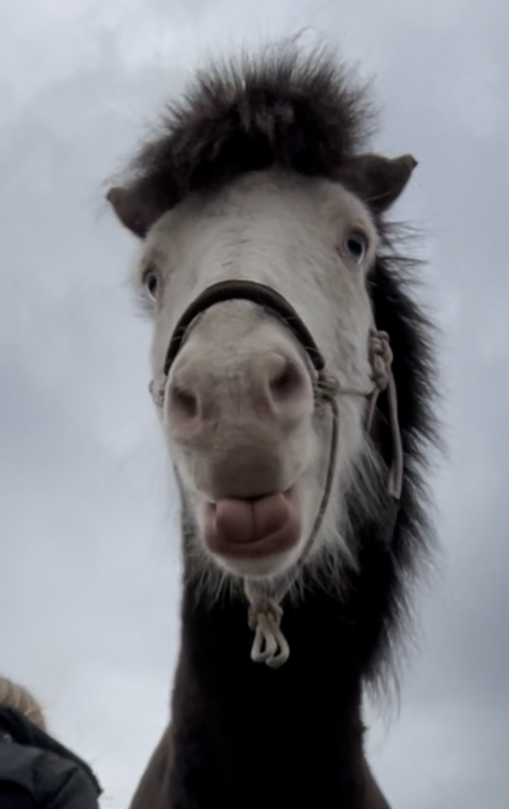
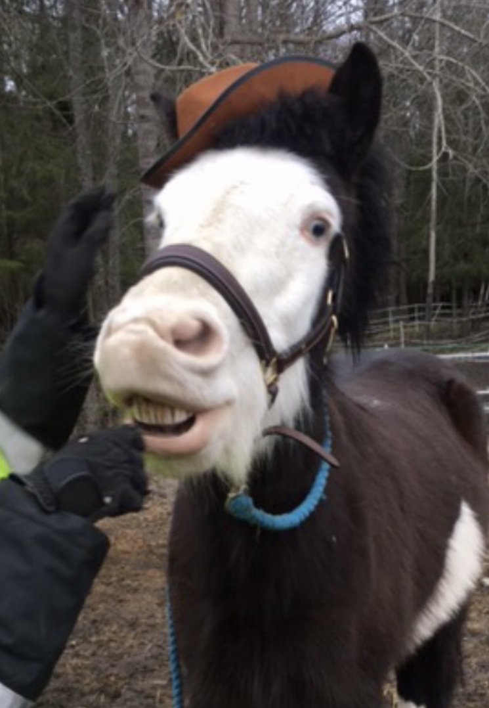

Islandshästen är utrustad med

- Tjock mjuk päls
- Ett behagligt temperament
- Två extra gångarter, tölt och passgång
- Starka små hovar
| Kan islandshästar.. | Ja | Nej |
|---|---|---|
| Hoppa? | Ja! | --- |
| Dressyr? | Ja! | --- |
| Trickträna? | Ja! | --- |
| Göra dig besviken? | --- | NEJ |
Gångarter
islandshästens extra gångarter är iögonfallande och förtrollar snabbt hästälskaren och hästskeptikern.
Tölten är en mycket bekväm och mjuk gångart som förädlar och gör ridturen till en helt ny upplevelse.
Svenska Islandshästförbundet Sif Jobbar för att aveln av islandshästar gynnar rasen och bevarar islandshästens attribut.
Länk till svenska islandshästförbundets
hemsida



